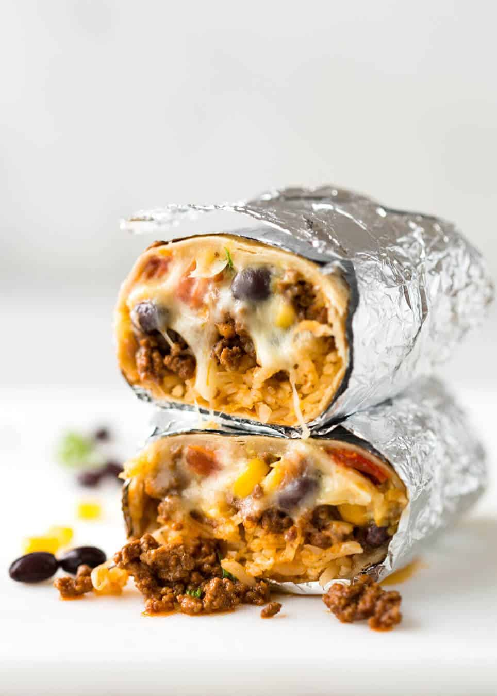

Burrito

Description
A burrito is a dish in Mexican and Tex-Mex cuisine that took form in Ciudad Juárez, consisting of a flour tortilla wrapped into a sealed cylindrical shape around various ingredients. The tortilla is sometimes lightly grilled or steamed to soften it, make it more pliable, and allow it to adhere to itself.
Ingredients
- Beef Burrito Filling – juicy and packed with flavour!
- Plain white rice – or try brown rice, quinoa, or this Mexican Red Rice!)
- Corn
- Black beans
- Cabbage or lettuce
- Diced tomato
- Red onion
- Cheese
- Coriander/cilantro
Steps
- Heat oil in a skillet over high heat. Add garlic and onion, cook for 2 minutes until onion is lightly browned. Add beef and cook, breaking it up as you go, until it turns from red to brown.
- Add Taco Seasoning (or use 1 packet store bought) and cook for 1 minute. Then add tomato paste and water, cook for 3 minutes until the water is mostly evaporated but the beef is still juicy, not dried out. Set aside to cool for 10 minutes – piping hot filling will steam the burrito, making the tortilla soggy.
- Optional: If not warming rolled burrito, warm the tortillas before rolling (per packet directions).
- Place a burrito on a work surface. Place 1/4 - 1/3 cup of rice just below the centre. Top with 1/4 - 1/3 cup beef, then some lettuce, corn, black beans, tomato, a sprinkle of red onion, coriander and cheese.
- Fold up the bottom to cover the filling then fold the edges in (video helpful to see how to do this). Roll up tightly, then wrap in foil. Serve as is or heat per below.
- HEATING: To warm through, pan fry (dry pan) in the foil over medium high heat for a few minutes on each side to slightly crisp and warm the outside. Or for 10+ minutes on a medium low heat if you want to melt the cheese. Or they can be baked at 180C/350F for 20 minutes in the foil – this will warm them all the way through and crisp up the tortilla slightly. If they are straight from the fridge, they will take around 30 minutes to warm through.
- Burritos are best served with something to dollop/dip - sour cream (or yoghurt) and some sort of chilli sauce are my usual because it's easy. When I'm making more of an effort, I use Restaurant Style Salsa or Guacamole.
Note: This content was taken from here.